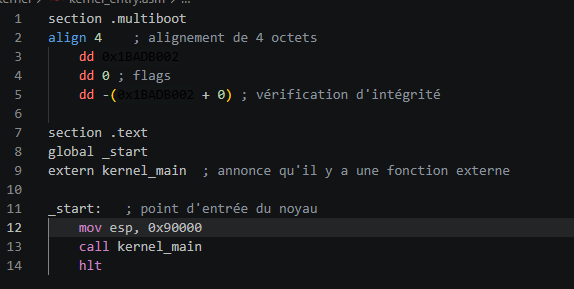
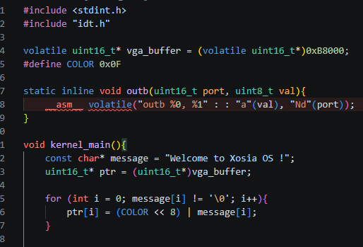
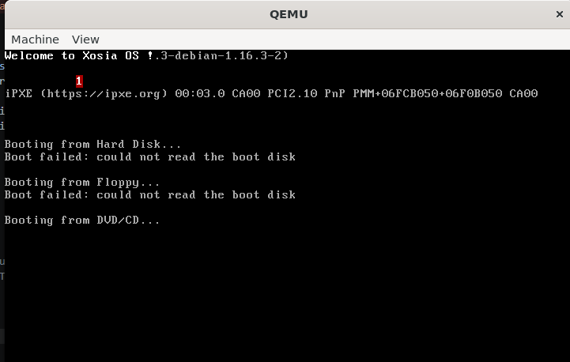
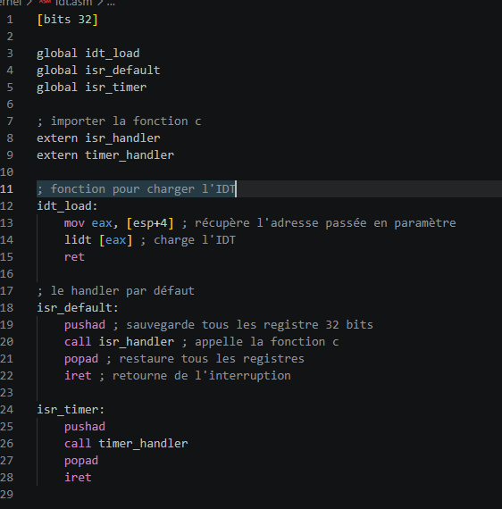
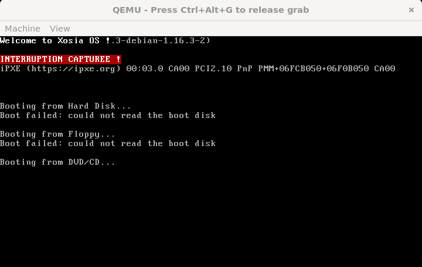
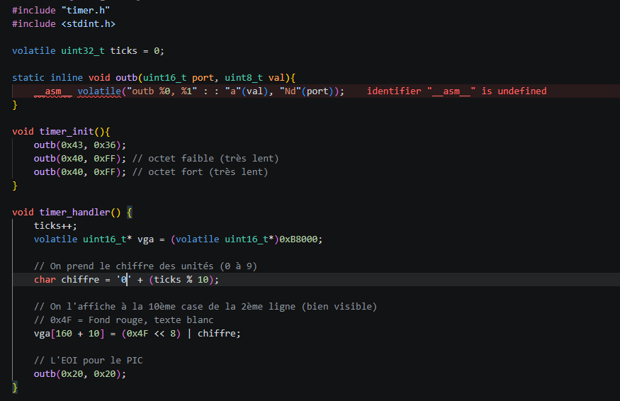

▸ PROJET FIL ROUGE : XOSIA OS
[root@dev:~$] cat /veille/os_dev.md
Pour ma veille technologique, j'ai choisi de m'attaquer à un domaine que très peu d'étudiants explorent : le développement bas niveau et la conception de systèmes d'exploitation. À travers la création de XOSIA OS (un OS 32 bits), je documente comment un ordinateur passe du mode réel au mode protégé, comment il gère la mémoire, et comment il communique avec le matériel (interruptions, timer).
Contrairement à un bootloader "maison", j'ai choisi d'utiliser GRUB avec la spécification
Multiboot. C'est GRUB qui s'occupe de passer le processeur en mode 32 bits et de charger
mon noyau en mémoire. Pour que GRUB me reconnaisse, mon fichier kernel_entry.asm doit
contenir un en-tête magique (le nombre 0x1BADB002).

Une fois que GRUB a fait son travail, on passe le relais à un code écrit en C.
La première chose à faire est d'afficher un message à l'écran en écrivant directement dans la
mémoire vidéo (VGA) à l'adresse 0xB8000. Chaque caractère occupe 2 octets
(1 pour la lettre, 1 pour la couleur).


Un OS sans interruptions est un OS sourd. J'ai implémenté l'IDT (Interrupt Descriptor Table) pour gérer les exceptions du processeur (comme la division par zéro). J'ai également dû configurer le PIC (Programmable Interrupt Controller) pour décaler les interruptions matérielles à partir de l'entrée 32, afin d'éviter les conflits.


Le Timer (PIT - Programmable Interval Timer) est essentiel. Configuré pour envoyer une interruption régulière au processeur (IRQ 0), il permet à l'OS de créer une notion de temps. Cette phase m'a permis de comprendre comment le matériel communique en continu avec le noyau.

Les sites techniques et documentations officielles qui m'ont servi pour comprendre le développement bas niveau.